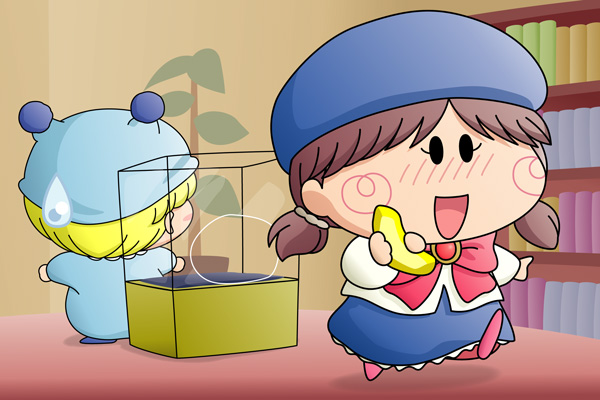

<!doctype html>
<html><!-- #BeginTemplate "/Templates/picture.dwt" --><!-- DW6 -->
<head>
<meta charset="utf-8">
<meta name="viewport" content="width=700">
<!-- #BeginEditable "doctitle" -->
<title>ムルモ屋本舗：絵：ミルモ＆ソフト(1)/title>
<!-- #EndEditable -->
<link rel="SHORTCUT ICON" href="/murumo.ico">
<link href="/import/contents.css" rel="stylesheet" type="text/css">
<!-- #BeginEditable "head" -->
<!-- #EndEditable -->
<!--[if lt IE 9]>
<script src="/import/html5shiv-printshiv.js"></script>
<![endif]-->
</head>

<body>
<div id="wrapper">
<header>
<div id="title">
<h1> <!-- #BeginEditable "title" -->ミルモ＆ソフト(1) <!-- #EndEditable --> </h1>
</div>
<nav>
<div id="topButton">
<a href="/index.html"></a>
</div>
</nav>
</header>
<div class="clearfix"></div>

<div id="subheader"><!-- #BeginEditable "subheader" -->
<!-- #EndEditable -->
</div>

<article>
<!-- #BeginEditable "article" -->
									<div align="center">
										<p><a href="rirumu01.html"><br>
											</a></p>
									</div>
								<div align="left">
									<p><font color="#d9002c"><b>　</b></font><strong><font color="#5b2b35">ソフト</font></strong>「バナナダイヤはいただいたぽよ」<br>
										　<strong><font color="#67a5bb">ミルモ</font></strong>「はっ、な、何～～っ」<br>
										ミルモはすぐに後ろを振り向いたけれど時すでに遅し。バナナダイヤは天井から現れた怪盗チョコソフトにあっさりと奪われてしまうのでした。</p>
									<p>　<font color="#67a5bb"><strong>ミルモ</strong></font>「くっそ～！あの役立たずの刑事め！<br>
										　　　　　こうなったらオレの魔法で・・・」<br>
										　<strong><font color="#5b2b35">ソフト</font></strong>「そうはさせないぽよ！<br>
										　　　　　ソフトでポン！」<br>
										ゴム鞠のようなものがミルモを包み込みます。</p>
									<p>　<strong><font color="#67a5bb">ミルモ</font></strong>「あわわわわ……出せーっ！<br>
										　　　　　オレのバナナダイヤちゃんを返せーっ！」<br>
										　<strong><font color="#5b2b35">ソフト</font></strong>「そうはいかないぽよ。<br>
										　　　　　しばらくそこで固まってて欲しいぽよ」<br>
										　<strong><font color="#67a5bb">ミルモ</font></strong>「お～～いっ、マンボーっ、<br>
										　　　　　早く下へ降りてきてくれ～～っ」</p>
									<p>　ソフトは部屋を出て廊下を走っていきます。廊下の角を曲がろうとしたところで…。<br>
										　<br>
										　ドンッ！</p>
									<p>　<strong><font color="#5b2b35">ソフト</font></strong>「きゃっ」</p>
									<p><br>
										　怪盗チョコソフトの第４話です。ミルモ邸では激しい決戦が…あるわけでもなく、あっさりと奪われてしまったバナナダイヤ。この間抜けな結末はミルモとマンボのコンビなら十分にあり得ると考えます(^^;。</p>
									<p>　ミルモ邸のシーンはもう少しだけ続きます。緊迫(?)の次回をお楽しみに！</p>
								</div>
							<!-- #EndEditable -->
<p align="right">(<!-- #BeginEditable "date" -->2007/3/24<!-- #EndEditable -->)</p>
</article>

<div id="subfooter">
<!-- #BeginEditable "subfooter" --><!-- #EndEditable -->
</div>


<footer>
<nav>
<!-- #BeginEditable "back" --><a onmouseover="changeImages( /*CMP*/'m_back',/*URL*/'../images/m_back_over.gif');return true" onmouseout="changeImages( /*CMP*/'m_back',/*URL*/'../images/m_back.gif');return true" href="special06.html"></a><!-- #EndEditable --></nav>
</footer>
</div>
</body>
<!-- #EndTemplate --></html>